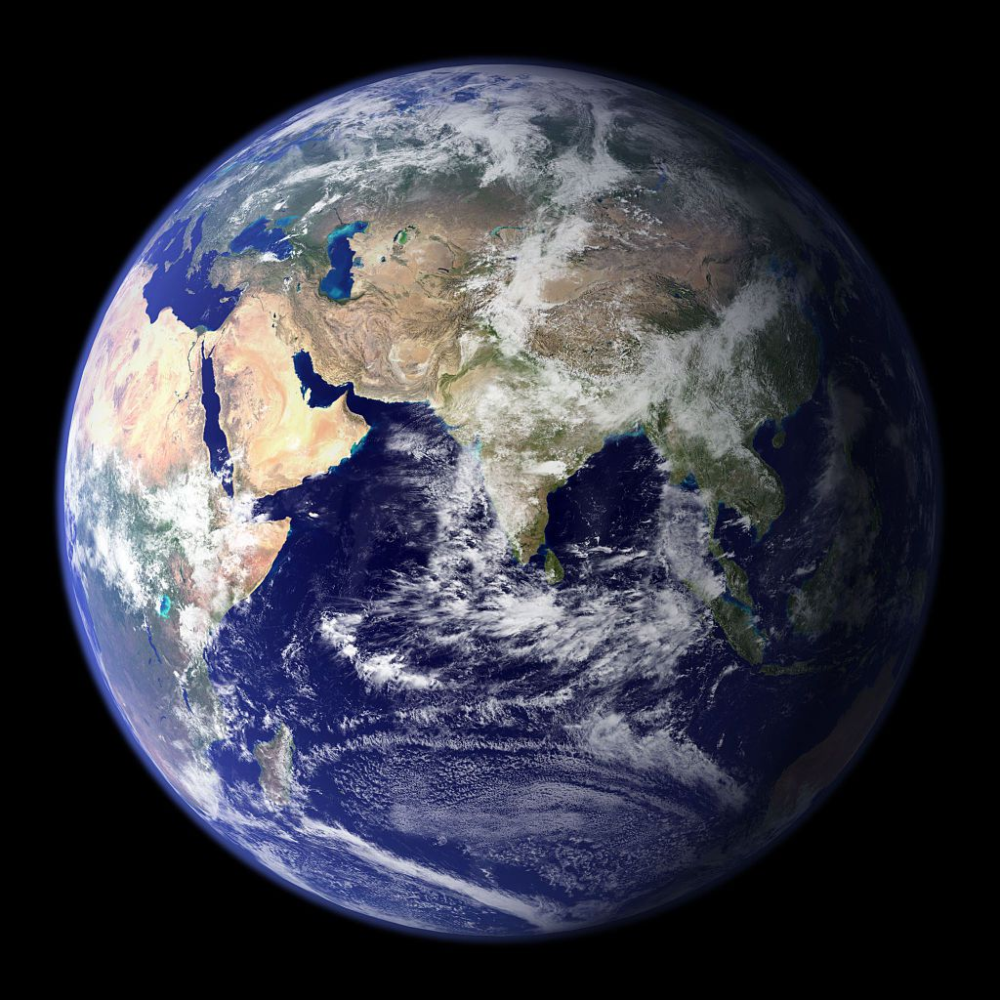
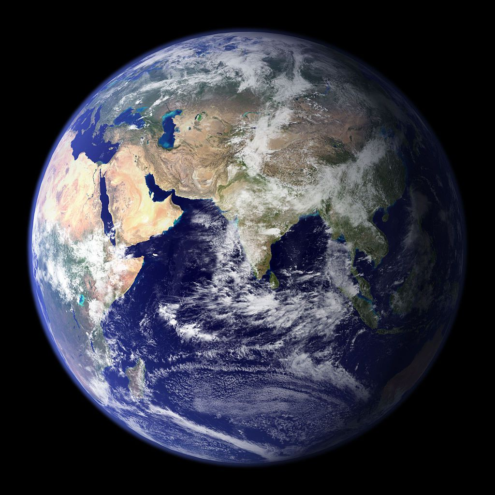

Sun
When the sun goes down and night time comes, can you see millions of stars in the black sky? Stars are very big balls of hot burning gas. In space, some stars look blue and some stars look red. Our sun is a star. The sun and all the planets that go around it make up the solar system. There are 8 planets in our solar system.
- Mercury
- Venus
- Earth
- Mars
- Jupiter
- Saturn
- Uranus
- Neptune
Inner Planets
The planets Mercury, Venus, Earth, and Mars, are called terrestrial because they have a compact, rocky surface like Earth's terra firma. The terrestrial planets are the four innermost planets in the solar system.
- Mercury
- Venus
- Earth
- Mars
Outer Planets
The outer planets are gas giants Jupiter and Saturn and ice giants Uranus and Neptune. Beyond Neptune, a newer class of smaller worlds called dwarf planets reign, including longtime favorite Pluto.
- Jupiter
- Saturn
- Uranus
- Neptune

 
